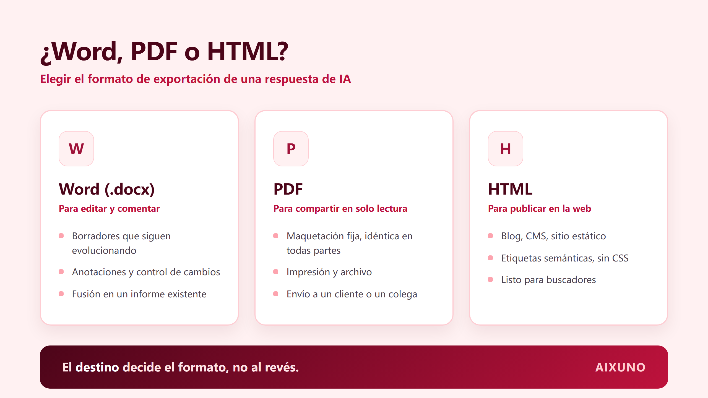

Guía de flujo de trabajo con IA
Cómo exportar una respuesta de IA
Una respuesta de IA útil no debería perderse en el historial de un chat. Guárdala en el formato adecuado para poder editarla, compartirla o reutilizarla como conocimiento.

Elegir según lo que viene después
La mayoría de los errores de exportación empiezan al elegir una salida que no encaja con el siguiente paso. Cuatro destinos cubren casi todos los casos.
| Qué viene después | Mejor salida | Por qué |
|---|---|---|
| Un colega edita o comenta | Word (.docx) | El seguimiento de cambios y los comentarios solo existen en un documento editable |
| Lo archivas o lo envías a un cliente | La maquetación queda fija en cualquier dispositivo | |
| Irá a un blog o una landing page | HTML | Conserva etiquetas semánticas que un CMS puede estilizar |
| Pasa a ser una nota a largo plazo | Markdown | El texto plano sobrevive a cualquier editor y al control de versiones |
Lo que suele salir mal
- Imprimir la ventana del chat directamente a PDF conserva el encabezado del sitio, la barra lateral y las burbujas de mensajes.
- La captura de pantalla a PDF produce imágenes: el texto no se podrá buscar ni copiar después.
- Pegar texto enriquecido en Word conserva la fuente del navegador, que entra en conflicto con los estilos del documento.
Lista de comprobación antes de exportar
- Quita de la respuesta las partes que no necesitas — los modelos rara vez producen solo lo que pediste.
- Confirma los niveles de encabezado: un solo encabezado de nivel 1 por documento, todo lo demás anidado debajo.
- Mira las tablas y los bloques de código en la vista previa: son los primeros elementos que se rompen.
Preguntas sobre elegir un formato
¿Qué formato debo enviar a un cliente?
El PDF, porque la maquetación queda idéntica en cualquier dispositivo y no se puede editar por accidente.
¿Por qué no imprimir directamente la ventana del chat?
La página impresa arrastra el encabezado del sitio, las burbujas de mensajes y normalmente la URL de la página — nada de eso pertenece a un entregable.
¿Puedo exportar dos veces la misma respuesta?
Sí. El texto se queda en el editor: puedes generar primero Word y después PDF a partir del mismo contenido.
Cuando la exportación falla
- El archivo descargado está vacío.El editor estaba vacío al exportar; la acción solo se activa cuando hay contenido.
- Salió el formato equivocado.Cada herramienta exporta un solo formato: cambia de herramienta en vez de buscar un selector de formato.
- Faltan las imágenes.La exportación de texto nunca incluye imágenes, sea cual sea el formato. Guárdalas aparte y colócalas en el documento después.